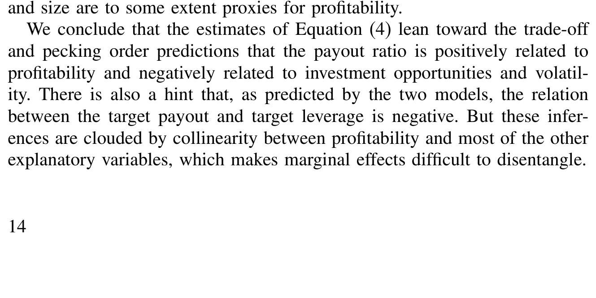
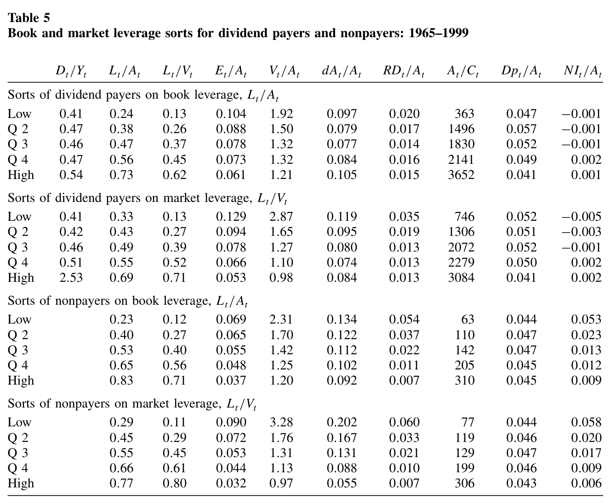
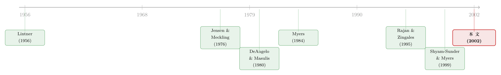

越赚钱，越不肯借钱——两个资本结构理论，各有一处「死穴」
本文读的是 Fama & French (2002, Review of Financial Studies)：用 Fama-MacBeth 的逐年横截面回归，对「权衡」与「啄食顺序」两个资本结构模型做一次大样本拷问。结论是——两个模型共享的预测大多成立，但在二者分歧之处，各自踩中一个致命失败：权衡模型解释不了「越赚钱的公司杠杆越低」，而啄食顺序模型说不清股利、也说不清那条若隐若现的杠杆目标。更要命的是，作者顺手指出：此前几乎所有资本结构实证的标准误，都被低估了 2 到 5 倍。
1 一桩二十年没破的悬案
先说一个让无数公司金融学者夜不能寐的事实。
按照课本里最体面的那套逻辑——权衡理论 (trade-off model)——一家公司应该这样决定借多少钱：利息可以抵税，债务能逼着经理把多余的现金吐出来，这些是借钱的「好处」；而破产成本、股东与债权人之间的代理冲突，是借钱的「坏处」。当最后一块钱债务的好处恰好抵掉它的坏处，就到了最优杠杆。
这套逻辑有一个再清楚不过的推论：越赚钱的公司，越应该多借钱。因为利润越高，利息税盾越值钱（你有足够的应税利润去抵扣），破产的威胁也越远。税收、代理、破产成本，几股力量异口同声——盈利能力 (profitability) 和杠杆应该是正相关。
可是，几乎每一份数据都在打这套逻辑的脸：现实里，越赚钱的公司，杠杆越低。
这就是公司金融里那桩著名的悬案。Fama 和 French 这篇 2002 年的文章，并不是第一个撞见它的人，但他们做了一件别人没做透的事：把两个互相竞争的理论同时拖到同一张大样本的审判桌前，看它们各自在哪里翻车。而且——这是真正关键的一步——他们换了一把更结实的统计尺子，结果发现，此前大家「以为自己知道」的那些资本结构结论，标准误普遍被低估了一大截，可信度本身就要打个问号。
2 两个嫌疑人：权衡 vs 啄食顺序
要看懂这篇文章，得先把两个「嫌疑人」摆清楚。
第一个嫌疑人：权衡理论。 它的世界观上面已经讲了——公司有一个最优杠杆、一个最优派息，由税收、破产成本、自由现金流的代理成本 (agency costs of free cash flow) 等几股力量「权衡」出来。在 DeAngelo 和 Masulis (1980) 的版本里，非负债税盾 (nondebt tax shields)（比如 R&D、折旧）越多，利息税盾越不值钱，杠杆就该越低；而其背后更一般的力量，是政府「征税狠、补贴损失却不狠」造成的盈亏不对称——于是越赚钱的公司面临越高的预期税率，越该多借钱避税。在 Jensen 和 Meckling (1976)、Jensen (1986) 的代理故事里，债务和股利是逼经理吐出自由现金流的两根鞭子，所以盈利越高、投资越少的公司，越该多分红、多负债。
第二个嫌疑人：啄食顺序模型 (pecking order model)。 这是 Myers (1984) 借 Myers 和 Majluf (1984) 提出的。核心是信息不对称 (asymmetric information)：经理比外部投资者更懂自家证券的真实价值，于是发新股、发风险债时市场会打折，经理为了不被「贱卖」、不被迫放弃好项目，融资时有一个严格的偏好次序——先用留存收益，再用安全债，然后才是风险债，最后实在没办法了才发股票。
啄食顺序最反直觉、也最致命的一个推论是：公司没有杠杆目标。杠杆只是「累计的净现金流缺口」被动留下的痕迹——投资多于留存收益时债务上升，反之下降。它不是被某个「最优值」吸引过去的，而是现金流推到哪算哪。
于是，在「盈利—杠杆」这个问题上，两个嫌疑人当庭对质：
- 权衡理论说：盈利 ↑ → 杠杆 ↑（为了税盾、为了管住自由现金流）；
- 简单版啄食顺序说：盈利 ↑ → 杠杆 ↓（赚得多就少借，债是被动产物）。
这是一道符号题。数据站在谁那边，谁就赢下这一局。
3 真正关键的一步：换一把结实的尺子
讲到这里，一个自然的问题是：既然前人早就发现「盈利越高杠杆越低」，那这篇文章新在哪？
新就新在 Fama 和 French 不相信前人的标准误。
在他们看来，资本结构实证里最严重的毛病，不是回归系数算错了，而是标准误被严重低估，把推断的可信度搅浑了。以往的做法，要么是单一年份的横截面回归——这时几乎没人去处理「同一年里不同公司的残差是相关的」（cross-correlation）；要么是面板回归 (panel regression)——这时既忽略了横截面相关，又忽略了「残差在不同年份之间也相关」（autocorrelation）带来的斜率标准误偏误。
他们的解法，是回到 Fama 和 MacBeth (1973) 的老办法（下称 FM）：每年单独跑一个横截面回归，得到一串逐年的斜率，再用这串斜率的时间序列标准差去做推断。这个平均斜率和面板回归的斜率携带同样的信息，但它的标准误是「稳健」的——大样本会压低逐年斜率的波动，残差的横截面正相关会同时抬高逐年斜率的波动和平均斜率的标准误，而且对异方差天然免疫（因为对一个样本均值不存在异方差校正），还能用斜率序列的自相关来调整。
那么，前人低估了多少？这才是这篇论文最触目惊心的「量级」：
- 横截面相关几乎总是把股利和杠杆回归里平均斜率的标准误，放大两倍以上，常常超过五倍；
- 自相关有时还能再追加约 250% 的增幅。
换句话说，大量资本结构检验里那些看起来「高度显著」的结论，标准误几乎肯定被低估了一个未知的大数。这意味着什么？意味着「我们以为我们知道的关于资本结构的事」，在被稳健方法重新确认之前，统统欠一个可信度。所以这篇文章有两层贡献：一层是对两个模型的实质检验，另一层——常被人忽略——是给一大堆既有结论补上了一个可信的统计地基。
（这种「换把尺子、结论就翻案」的故事，在资产定价和公司金融里反复上演；关于标准误如何改写一桩旧公案，可参见《股利收益率真能预测收益吗？——一桩被「标准误」改写的旧公案》。）
4 模型：把股利写成一个「慢慢靠近目标」的方程
这篇文章的实证骨架，建在 Lintner (1956) 的部分调整模型 (partial adjustment model) 上——Allen 和 Michaely (1995) 认为它对股利行为的刻画相当到位。我们一步步把它拆开。
第一步，假设公司有一个长期目标派息率 (target payout) \(TP\)，它把第 \(t+1\) 年的目标股利 \(TD_{t+1}\) 和普通股盈利 \(Y_{t+1}\) 联系起来：
$$TD_{t+1} = TP \cdot Y_{t+1}$$
第二步，因为存在调整成本，公司当年只走向目标的一部分。设调整速度 (speed of adjustment) 为 \(SOA\)：
$$D_{t+1} - D_t = SOA\,(TD_{t+1} - D_t) + e_{t+1}$$
把第一式代进去，整理成可估计的形式：
$$D_{t+1} - D_t = a_1 Y_{t+1} + a_2 D_t + e_{t+1}, \qquad SOA = -a_2$$
这里的直觉是：股利对盈利的反应是「黏」的——好消息来了，公司不会一步把股利提到位，而是慢慢挪。\(SOA\) 越小，股利越平滑。
第三步，也是 Fama-French 真正的创新：他们不把目标派息率 \(TP\) 当成一个对所有公司都一样的常数，而是让它随公司特征变化。于是每年估计的横截面回归是（省略公司下标）：
读这个方程的窍门是：整个括号就是目标派息率。括号里每一项的系数，回答的都是同一个问题——「某个特征往哪个方向、推动目标派息率多少」。比如 \(a_{1V}\) 若为负，就说明投资机会越多（\(V/A\) 越高）的公司，目标派息率越低。
注意一个技术细节：他们没有直接对派息率 \(D_{t+1}/Y_{t+1}\) 建模，而是把盈利 \(Y_{t+1}\) 放在方程右边。原因是盈利接近零时，派息率会爆出极端的「影响点」。同理，因为多数变量都除以资产 \(A_t\)，他们每年剔除资产小于 250 万美元的公司——这一步让每个回归的平均公司数从 1623 微降到 1618。
杠杆那一侧，结构对称：目标杠杆也是盈利、投资、波动率等变量的函数，目标杠杆又反过来进入派息方程，所以两个结构方程用两阶段最小二乘 (two-stage least squares, 2SLS) 联立估计，外加两个部分调整方程，分别刻画股利和杠杆向各自目标的移动。
5 数据与变量代理
数据来自 Compustat，观测单位是「公司–年」，样本期 1965–1999，平均每年超过 3000 家公司——相比之下，此前检验杠杆均值回归的文献样本小得可怜：Auerbach (1985) 只有 143 家，Jalilvand 和 Harris (1984) 只有 108 家，而唯一检验债务对短期投资/盈利如何反应的 Shyam-Sunder 和 Myers (1999)，只用了能熬过整个 1971–1989 期的 157 家公司。样本量上的代差，本身就是这篇文章底气的一部分。
几个关键代理变量值得记住：
- 盈利能力：
ET_t/A_t（利息、税、优先股股利之前的盈利／总资产）和E_t/A_t（税后、利息前盈利／资产）； - 投资机会：
V_t/A_t（公司总市值／账面价值，约等于 Tobin's Q）、资产增长dA_t/A_t、以及RD_t/A_t（R&D／资产）。注意 R&D 信号是混的——它既代表未来投资，又是非负债税盾。Compustat里超过 60% 的公司不报或报零 R&D，所以专门设了一个虚拟变量RDD处理这一大群公司的非线性； - 波动率：用公司规模
ln(A_t)代理（假设更大、更分散的公司盈利波动更小）。
样本剔除金融公司和公用事业——前者的杠杆不适合用来检验这类模型，后者的融资决策可能是管制的副产品。
6 审判结果：共识成立，分歧处各有一伤
现在把两个嫌疑人的供词和证据对一对。
第一类：两个模型都同意的预测——基本都成立。 越赚钱、投资越少的公司，派息率越高。这一条权衡理论和啄食顺序殊途同归，数据也确实点头。

Table 1: shows estimates of Equation (4) that exclude target leverage as
第二类，也是全文的戏眼：在二者分歧处，每个模型各栽一个跟头。
权衡模型栽的那个跟头，正是开篇那桩悬案——越赚钱的公司，杠杆越低。这与权衡理论「盈利↑→杠杆↑」的预测正面相撞，却恰好是啄食顺序「赚得多就少借」的招牌预测。这一局，啄食顺序赢。

Table 5: summarizes annual sorts of dividend payers (or nonpayers) into
可是别急着给啄食顺序发奖。它自己也栽了：
其一，Myers (1984) 断言啄食顺序世界里公司没有杠杆目标。但 Fama-French 的分析显示，一旦把「未来」的融资成本也考虑进来，公司其实会被推向一个目标——只不过这个目标是软的、单边的：投资多的公司倾向于压低杠杆，给未来留出低风险举债空间；但当正的净现金流把杠杆压到很低时，公司并没有动力反向加杠杆。杠杆确实表现出均值回归，这与纯粹的啄食顺序不符。
其二，关于市场杠杆 (market leverage) 与投资的关系：投资越多的公司，市场杠杆越低。这一条同时与权衡模型、以及考虑未来融资成本的「复杂版啄食顺序」相容——所以它没能帮两个模型分出胜负，反而提醒我们：账面杠杆 (book leverage) 和市场杠杆的预测并不总是一致，这也是为什么作者坚持两套结果都报。
第三类：短期 vs 长期的「分工」。 这是啄食顺序最漂亮的一次得分。长期看，投资多的公司确实压低派息率；但短期的投资与盈利波动，并不靠调整股利来吸收——股利是黏的（Lintner 的洞见再次显形），短期的净现金流波动主要由债务承接。这正是啄食顺序的核心预言：留着股利别动，让债去当那块「缓冲垫」。
一句话总结这场审判：共享的预测大多过关；分歧之处，权衡输在盈利—杠杆的符号上，啄食顺序输在股利与那条软目标上。没有哪个模型全身而退。
（关于「该发债的公司偏去发了股」如何把啄食顺序逼到墙角，可参见《啄食顺序理论的滑铁卢》；而把「盈利—杠杆之谜」用同一年既借钱又发股的公司拆开看，可参见《同一年里既借钱又发股》。）
7 文献脉络
把这条研究脉络拉直来看，它其实是两条线在 2002 年的一次交汇。
一条是股利的线。Lintner (1956) 用部分调整模型奠定了「股利是黏的、向长期目标缓慢靠拢」这一经验事实，这成了本文股利方程的骨架。
另一条是资本结构的线，而它内部又是两支力量的角力。一支是权衡传统：Jensen 和 Meckling (1976) 的代理成本、DeAngelo 和 Masulis (1980) 把非负债税盾写进最优杠杆、Miller 和 Scholes (1978) 关于个人税的讨论，共同搭起「最优杠杆」的大厦。另一支是 Myers (1984) 与 Myers 和 Majluf (1984) 用信息不对称掀起的啄食顺序革命，直接质疑「最优杠杆」是否存在。

进入九十年代，实证开始追问「我们到底知道什么」：Rajan 和 Zingales (1995) 做了跨国的资本结构事实梳理，Shyam-Sunder 和 Myers (1999) 第一次正面把静态权衡和啄食顺序摆上擂台——但样本只有 157 家。Fama 和 French (2002) 站在这个位置上，做了三件前人没合在一起做的事：第一次检验两个模型对派息率的预测、第一次把派息率和杠杆联立建模、并用 FM 方法给整片文献补上可信的标准误。它既是这条脉络的一次集大成，也是一次「方法论的清算」。
8 评论与延伸（Q&A + 研究方向）
(a) 几个可能的疑问
Q：权衡和啄食顺序最核心的分歧，到底在哪一个变量上？
在盈利能力与杠杆的符号上。权衡理论（税盾＋代理）预测盈利↑→杠杆↑；简单版啄食顺序预测盈利↑→杠杆↓。这是一道干净的符号题，数据稳健地站在啄食顺序一边——这也是权衡模型最难洗刷的那处伤。
Q：既然「越赚钱杠杆越低」支持啄食顺序，为什么说它也失败了？
因为啄食顺序的招牌主张之一是「公司没有杠杆目标」。可本文发现杠杆存在均值回归、存在一个（软的、单边的）目标，这与纯粹啄食顺序矛盾。再加上它对股利的解释本就单薄——Myers 自己都承认啄食顺序解释不了公司为什么要付股利。赢了杠杆的符号，却输了「有没有目标」和「股利」。
Q：Fama-MacBeth 这套方法究竟解决了什么实质问题？
解决的是标准误被低估的问题。同一年里不同公司的残差相关（横截面相关）、不同年份之间残差相关（自相关），这两件事会把面板/横截面回归的标准误压得过小。本文量化出来：横截面相关让标准误放大 2 倍以上、常超 5 倍，自相关再追加约 250%。所以前人很多「显著」结论的可信度，本就存疑。
Q：账面杠杆还是市场杠杆，结论会不会反过来？
会有差别，这正是作者坚持两套都报的原因。多数预测对账面杠杆直接成立、部分能延伸到市场杠杆，还有一些是模糊的。比较稳健的是「投资越多→市场杠杆越低」；而盈利对账面杠杆的预测，恰是权衡与啄食顺序打架的地方。
Q：股利和债务在「吸收冲击」上是怎么分工的？
长期看，投资机会会压低派息率；但短期的投资与盈利波动不靠砍股利来消化——股利是黏的——而是主要由债务承接。这是啄食顺序最干净的一次胜利：债当缓冲垫，股利保持平滑。
Q：这对「公司到底有没有杠杆目标」的争论意味着什么？
它给出一个折中：目标存在，但软且单边。投资多的公司会主动压低杠杆以备未来，可一旦正现金流把杠杆压得很低，公司并不急于反向加杠杆回到目标——这与权衡模型里「高低两端都被拉回目标」的双边调整不同。
(b) 几个可能的研究问题与提案
1. 把「派息—杠杆联立框架」搬到公司债二级市场流动性。
【经济故事】本文证明低杠杆往往是高盈利的「果」。那么这些低杠杆、高盈利的发行人，其债券在二级市场的流动性是否更好？若流动性溢价部分由发行人的盈利—杠杆类型决定，就为信用利差的「流动性那一块」找到一个基本面来源。
【可行性】中-高。TRACE 成交数据 + Compustat/Mergent FISD 即可构建；识别上可用 FM 逐年横截面回归直接复刻本文方法，把流动性指标放到左边。（与《把「成交价」从「成交量」里解放出来》的流动性度量可对接。）
2. 外资持有人是否改写「盈利—杠杆」关系。
【经济故事】外资比例高的公司，可能因治理改善（更少自由现金流滥用）或税收/信息渠道，使盈利与杠杆的关系发生位移。若外资进入削弱了「越赚钱越少借」的强度，那说明这条关系里有一部分是信息不对称在起作用——正中啄食顺序的机制。
【可行性】中。需 FactSet/持股层面外资数据 + 财务面板；识别可借助指数纳入或可投资度 (investability) 变化做准自然实验。
3. 用现代交错 DiD 重审资本结构文献的标准误教训。 【经济故事】本文二十多年前就警告：横截面相关 + 自相关会让标准误低估数倍。今天大量资本结构因果研究用交错双重差分 (difference-in-differences, DiD)，是否重蹈覆辙？把 FM 的诊断逻辑系统地套到近十年顶刊的资本结构 DiD 上，可能改写不少「显著」结论。 【可行性】高。纯方法+复刻，数据公开，doable。
4. 短期冲击「由债吸收」在债务结构层面的精细检验。
【经济故事】本文说短期波动主要由债务承接，但没区分是短债、循环信贷还是长债在承接。用债务结构的细分数据看：盈利的负向冲击究竟由哪一类债务首先扩张？这能把啄食顺序的「缓冲垫」机制落到具体工具上。
【可行性】中。需 Capital IQ 债务明细；识别可用盈利的外生冲击（如行业需求、商品价格）做工具。
9 我的判断
先说贡献。这篇文章的份量不在某一个惊艳的系数，而在两件事：一是它第一次把股利和杠杆放进同一个联立框架，让「啄食顺序解释不了股利、权衡解释不了盈利—杠杆」这两处伤口在同一张桌子上同时显形；二是它用 FM 方法给一整片文献做了「标准误体检」，并诚实地告诉同行——你们以为知道的事，可信度先打个折。后一点的影响，甚至可能超过前一点。
再说对识别的担忧。最大的隐忧是变量代理的内生与含义混淆：V/A 既代理投资机会又混入当期盈利，RD/A 既是未来投资又是非负债税盾，ln(A) 既代理波动率又代理融资市场准入与年龄。这些「一个变量身兼数职」的代理，使得对某个系数的解读很难干净地归给某一个模型——作者自己也反复声明这一点。此外，2SLS 的联立识别依赖「哪些变量是真正外生」的假设，这在派息与杠杆互为因果的世界里，本就脆弱。还有一点：1965–1999 的 Compustat 样本偏向存活下来的、规模较大的公司，对「不付股利、投资大于盈利」那一类公司的推断会更弱——而恰恰是这类公司，简单版与复杂版啄食顺序的预测会打架。
最后，我想看到什么。我最想看的，是把这套「两个模型各有死穴」的诊断，搬到信用市场和外资持有人这两个新场景里重做一遍：盈利—杠杆的负相关，在债券投资者眼里是定价信号还是流动性信号？外资的进入，会不会让这条二十年的负相关松动？如果会，那就说明这条关系里至少有一部分，写的不是税收，也不是破产成本，而是信息——而这，正是啄食顺序当年最想证明的那件事。
参考文献
DeAngelo, H., and R. Masulis (1980). Optimal Capital Structure under Corporate and Personal Taxation. Journal of Financial Economics 8, 3–29.
Fama, E. F., and K. R. French (2001). Disappearing Dividends: Changing Firm Characteristics or Lower Propensity to Pay? Journal of Financial Economics 60, 3–43.
Fama, E. F., and K. R. French (2002). Testing Trade-Off and Pecking Order Predictions About Dividends and Debt. Review of Financial Studies 15(1), 1–33.
Fama, E. F., and J. D. MacBeth (1973). Risk, Return, and Equilibrium: Empirical Tests. Journal of Political Economy 81, 607–636.
Jensen, M. C., and W. H. Meckling (1976). Theory of the Firm: Managerial Behavior, Agency Costs and Ownership Structure. Journal of Financial Economics 3, 305–360.
Lintner, J. (1956). The Distribution of Incomes of Corporations Among Dividends, Retained Earnings, and Taxes. American Economic Review 46, 97–113.
Miller, M. H., and M. S. Scholes (1978). Dividends and Taxes. Journal of Financial Economics 6, 333–364.
Myers, S. C. (1984). The Capital Structure Puzzle. Journal of Finance 39, 575–592.
Myers, S. C., and N. S. Majluf (1984). Corporate Financing and Investment Decisions When Firms Have Information the Investors Do Not Have. Journal of Financial Economics 13, 187–221.
Rajan, R. G., and L. Zingales (1995). What Do We Know about Capital Structure? Some Evidence from International Data. Journal of Finance 50, 1421–1460.
Shyam-Sunder, L., and S. C. Myers (1999). Testing Static Tradeoff against Pecking Order Models of Capital Structure. Journal of Financial Economics 51, 219–244.